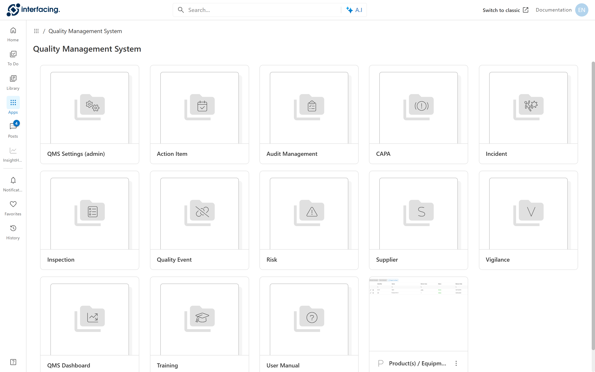
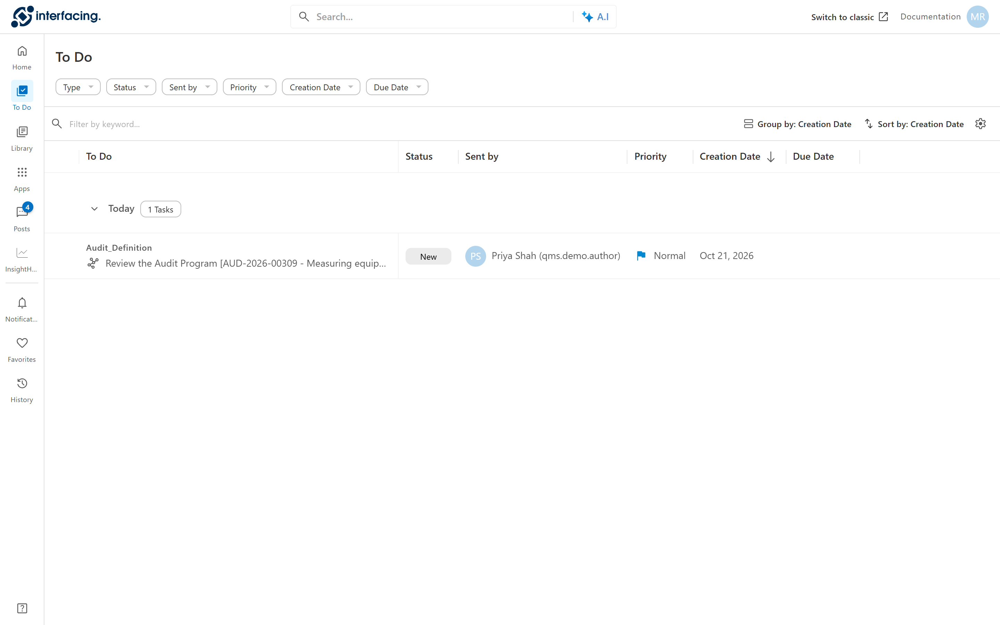

Where the work starts
At Cedar Valley, Priya starts things. She writes a requirement and creates a program. Later, Elena opens a CAPA by hand. Starting something new always begins in the same menu.
Open Apps in the left bar, then Quality Management System. Each tile is a module.

12345- Apps lists every module you may open.
- Audit Management holds programs, plans, requirements, tests and findings.
- CAPA starts a CAPA by hand with New CAPA.
- Action Item holds My Action List.
- Quality Event starts a quality event by hand.
Where the work arrives
Once something is started, the product hands each step to the right person. Marco gets the program to approve. Sam gets the audit to run. Jonas gets his action items. Nobody has to chase the next person.
Every step that needs a person arrives in To Do.

1234- To Do opens your list of tasks.
- The task subject names the step and the record, here "Review the Audit Program" for one program.
- Status is New until you open the task, Draft once you have opened it, and Completed after you submit it.
- Sent by shows who sent you the task, usually the person who did the step before.
Doing a task
Opening a task means reading what came before, filling in your part, and deciding what happens next. Marco either approves the program or sends it back.
Click a task to open it in a panel on the right. Every task panel ends the same way:
- Save keeps your work as a draft. You can come back later.
- Task Resolution is the decision, for example Approve or Reject. The choices differ per task.
- Submit sends the decision and hands the record to the next person.
- Delegate passes the task to a colleague.
The arrows icon at the top of the panel opens the task full screen. The later chapters show each task with its own choices.
Emails
People who are not at their desk still need to know. Grace, the auditee, never gets a task, but she must know when the auditors come.
Most tasks also send an email to the person who receives them.
Auditees get emails only, never tasks. They get an "Engagement Letter" when the audit is scheduled and an "Upcoming Audit" reminder before it.
Common mistakes
- Waiting for an email instead of checking To Do. The task is there even when the email was filtered as spam.
- Closing the panel without Save. Unsaved entries are lost.
- Picking a Task Resolution and forgetting Submit. The task stays open, and the next person never gets it.